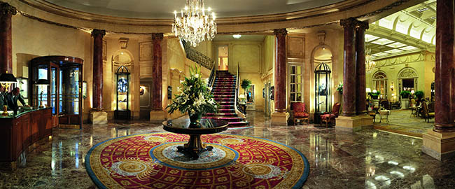
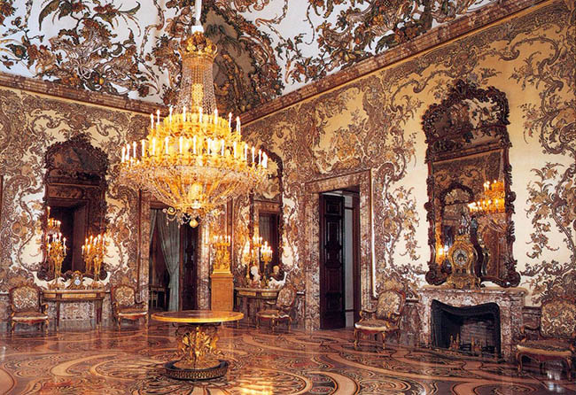
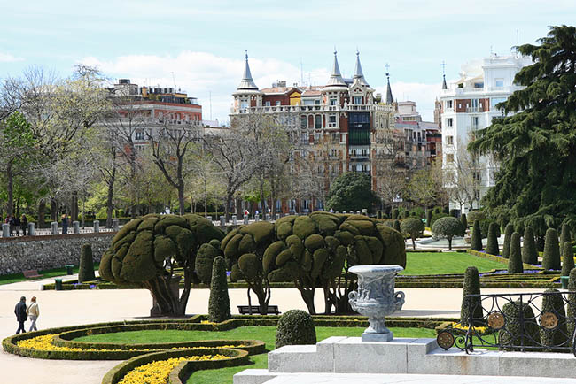
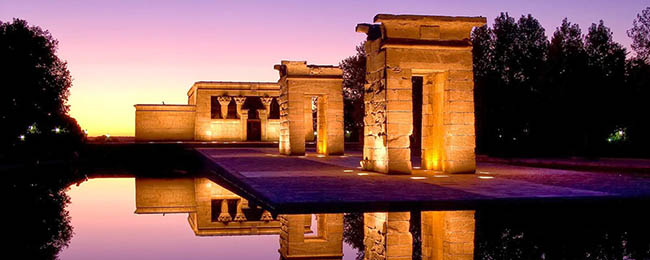
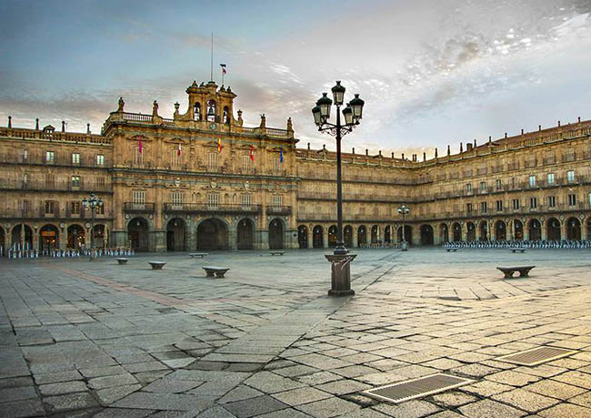

Музей Прадо
Nikita Fominov|1.06.1994
Музей Прадо является обязательным пунктом в экскурсионном списке во время поездки в Мадрид для любого путешественника. Да, именно так категорично. Почему? В этом неоклассическом здание, построенном во времена Карла III, сегодня собрана величайшая коллекция классической живописи в мире. Чтобы увидеть шедевры кисти Эль Греко, Диего Веласкеса, Франсиско Гойи, Босха, Тициана, Рембрандта, Рубенса, Альбрехта Дюрера и других гениальных художников, прийти в музей нужно до 18:00. Кстати, по воскресеньям вход в музей бесплатный, поэтому здесь вы можете столкнуться с очень большими очередями.
Читать далееКоролевский дворец Мадрида
Nikita Fominov|1.06.1995
Мадридский королевский дворец был построен в начале восемнадцатого века на месте древней мавританской крепости по распоряжению Филиппа V. Во дворце вы увидите фрески работы Караваджо и других талантливых мастеров тех времен, великолепные коллекции старинного оружия, скрипок Страдивари, фламандские гобелены, изысканную старинную мебель, лучшие венецианские зеркала и множество бесценных предметов искусства. Королевский дворец — настоящий музей, хранящий настоящие сокровища в залах, галереях и покоях, которые сами по себе являются достоянием. Каждую первую среду месяца с 12:00 до 13:00 вы можете посмотреть на церемониальную смену караула перед Тронным залом.
Читать далееПарк Ретиро
Nikita Fominov|1.06.1996
Если вы ищете идеальное место для отдыха и релакса после осмотра достопримечательностей, продлившегося целый день, лучшего варианта, чем парк Ретиро, наверное, просто не существует. Аккуратные аллеи и уютные уголки с лавочками, на которых можно отдохнуть, причудливые фигуры зеленых кустов, множество скульптур, фонтанов и озеро с прогулочными лодками, на фоне которых величественно возвышается Palacio de Cristal — вам здесь обязательно понравится.
Читать далееЕгипетский храм Дебода
Nikita Fominov|1.06.1997
Да, вам не показалось, именно египетский храм в Мадриде — настоящий древний храмовый комплекс, посвященный богине Исиде, сейчас находится в одном из мадридских парков. Египетский храм Дебода в Западном парке размещен с 1968 года — Египет передал Испании его в качестве благодарности за помощь в спасении огромного количества древних реликвий во время строительства Асуанской плотины. Из парка открывается очень красивый вид на самую старую часть города, собор и район отдыха.
Читать далееПласа-Майор
Nikita Fominov|1.06.1998
В конце концов, каждый приезжает сюда — эта площадь, мощеная мелким камнем и окруженная прекрасными зданиями с пассажами, является сердцем Мадрида. В центре площади Пласа-Майор возвышается памятник Филиппу II, здесь же расположены два особенно интересных здания — Дом Гильдии пекарей и Дом Гильдии Мясников. Ежедневно сюда приходят тысячи туристов, здесь кипит жизнь, работает много маленьких кафешек и баров, в которых вам предложат вкусный обед, чашечку кофе и освежающие напитки, чтобы вы смогли немного отдохнуть и отправиться исследовать город со свежими силами.
Читать далее